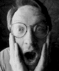
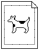
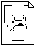

In Issue 17, we told part 1 of the history of the dogcow. We'll warn you again: If you
don't know what or who the dogcow is, or you don't care for Apple cultural minutiae,
you should just flip past this column.
DISTRIBUTION OF TECH NOTE #31
We left off at the point where the former Macintosh Technical Note #31, "The
Dogcow," had been created. The question then was how to distribute it. Mark Johnson
and I both thought that since it was an April Fool's joke anyway, the best thing would
be to just include it in the April monthly mailing to Apple Partners and Associates;
we'd drop it from the subsequent batches, with the direct intent of making it a curio.
The idea was that the people who were currently in the Macintosh community would
get it and everyone else wouldn't. We very intentionally were trying to build an aura
around it. The April 1989 mailing is the only time this Tech Note was ever in print
under the official auspices of Apple.
There was a bit of a lag time between the writing of the Note and the actual release; by
the time it went out, I actually had forgotten about it. The response was immediate and
intense. Internally I received a couple of vaguely threatening calls from people
claiming false ownership, but the overwhelming majority of people thought it was
great. One gentleman in the developer community took offense saying that "dogcow" was
too close to "Dachau" and showed how the note had underpinnings of anti-Semitism. (I
showed this one to my Jewish father-in-law, who had to be resuscitated, he was
laughing so hard.)
Aside from that, it really struck a chord with the developer community like nothing
I've seen before or since. I received about 40 pieces of fan mail that month. Developer
Technical Support (DTS) must have gone for a year before there was a batch of e-mail
that didn't have a dogcow reference in it. In fact, to this day people say to me, "Mark
Harlan? I know your name from Tech Notes" -- but it's the only one I ever wrote.
Then came the concept of a Developer CD as a vehicle for distributing Tech Notes
electronically (along with sample code and more). I was overseeing that project, and
immediately we had an interesting conundrum: We wanted all information in
electronic format, yet what were we going to do with Tech Note #31? Merely slipping
it into the Tech Notes stack seemed like disaster, but then it didn't really feel right to
omit it.
Again, it was Mark Johnson who came to the rescue with the excellent idea of burying
the Tech Note. So on the early CD, "Phil and Dave's Excellent CD," you have to go
through a bizarre sequence of commands to bring it up. Even now, tradition requires
that I not give the details, but it involves Shift-Option-clicking and typing "grazing off
a cliff," and it emits "Moof!" and "Foom!" sounds. (For the "Moof!" sound we took a real
cow and then Zz said "fff" into a MacRecorder; the"Foom!" is just the same sound
played backwards.) It took a while for anyone to find the Note using any technique, and
I've never heard of anyone doing it except through ResEdit.
The Note stayed on the first few Developer CDs. The access technique changed from disc
to disc, and not even I knew how to do it after the original "Phil and Dave." Somewhere
along the line the Note was dropped from the CD altogether.
OTHER DOGCOW PARAPHERNALIA
Bootleg T-shirts started appearing. There was an apartment near Apple headquarters
that started flying a dogcow flag. The stack version of the Note had a watermarked
background that someone removed pixel by pixel before posting it to the Internet.
Several developers were nearly thrown out of a movie theater at MacHack for
"Moofing" before a movie.
In addition to the Tech Note there are three pins: green background, the most common;
red background with Kanji (the word on the pin actually is pronounced "Moo-aann!"
because Japanese dogs don't woof, they say something like "aann-aann"); and the
super-rare red background with "Moof!", which are misprints of the Kanji batch.
Also, there's a dogcow window sticker. All of these were given away in DTS labs, and all
but the window sticker have been collected up a long time ago.
If you think of the dogcow fathers as being Zz Zimmerman, Mark Johnson, and me,
there's only one dogcow shirt that received our supervision and approval: the black
DTS sweatshirt with the small dogcow on the chest (designed by Toni Trujillo). I also
designed the graphic for a DTS gift that was a shoulder bag with all incarnations of the
dogcow on it (flipped, rotated, and inverted). Unfortunately the bag was incredibly
cheap and most of them have self-destructed.
Chris Derossi and Mary Burke designed a dogcow mousepad and even went so far as to
call Pepsi- Cola to get the exact color of Mountain Dew green for the background. They
made 500 of these and I wrote an insert that went into the packaging. Aside from the
original Tech Note, it's the only thing I've ever written about dogcattle -- until these
develop columns.
DOGCOW TRIVIA
Somewhere along the line I baptized the dogcow "Clarus." Of course she's a female, as
are all cows; males would be referred to as dogbulls, but none exist because there are
already bulldogs, and God doesn't like to have naming problems.
Now things are much bigger than they were then -- both in number of developers and
number of Apple employees. The dogcow regularly appears on documents that are no
longer connected to DTS, or in some cases (such as Scott Knaster's books) not even
from Apple. In a sense, the dogcow has become mainstream; people are copying it --
and that's exactly what I was fighting against in the first place (not to mention that
she, and her "Moof!" cry, are bona fide trademarks of Apple Computer). To put a stop
to all this, I'm threatening to kill her off, butdevelop 's editor has become such a fan
that she's not sure she'll accept a "Dogcow is Dead" column. Stay tuned!
MARK ("THE RED") HARLAN went through extensive deprogramming after six
years at Apple. Unfortunately, the therapy didn't hold and he has since joined yet
another cult: General Magic. In a recent interview, Mark was asked if he had any words
of wisdom on the dogcow. "Yeah. Warn everyone that both the dogcow logo and 'Moof!'
are trademarks of Apple Computer. You don't ever want to be in the position of having
to answer 'What are you in for?' with 'Bootleg T-shirts.'" *
Our friend in the LaserWriter Page Setup Options dialog, normal and
flipped vertically:

